Pway Class A - LU¶
1: Introduction¶
1.1: Definition of Permanent Way and Track¶
-
Permanent Way:
- All railway tracks in passenger service, the adjointing depots and sidings mostly electrified, timber / sleepers, cuttings, embankments, drainage and all associated features between and including the operational boundary fences.
-
Track:
- The permanent way and the ground within 2 m of any running rail, but exlcuing station platforms and areas guarded by physical barriar.
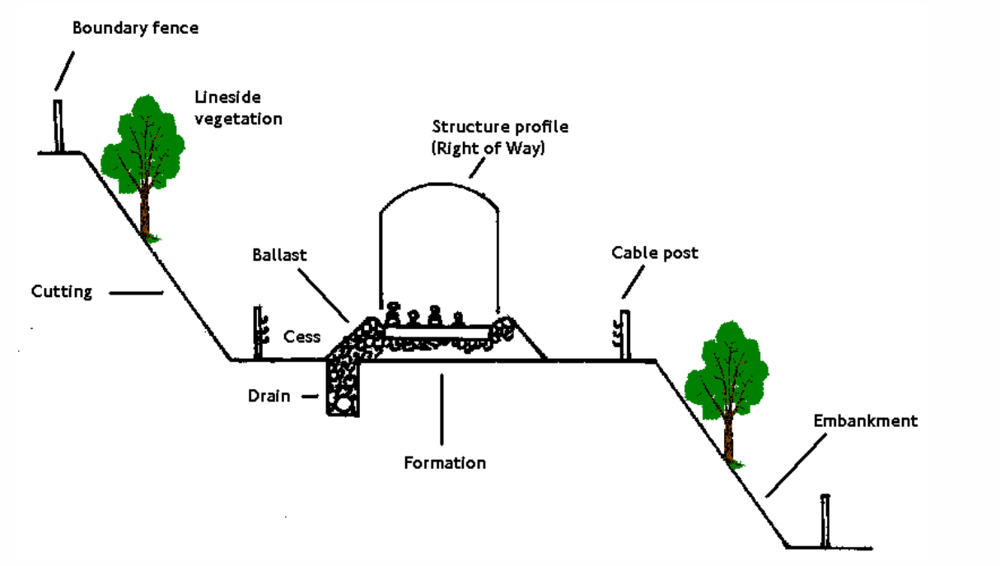
1.2: Main Components of PWay¶
- Running rails & joints
- Switches and corssings
- Rail fastening
- Sleepers and timbers
- Conductor rails and fittings
- Ballast and concrete
- Track Drainage
- Surface vegetation
- Boudndary fences
- Train arresters
- Structure gauge
1.3: Purpose of the PWay¶
- Support and guide the trains
- Provide a suitable running surface for wheels
- Provide adequate space for approved vehicles travelling at authorised speed
- Provide a suitable path for collector shoes
- Provide electrical paths & insulation for power and signalling
- Provide safe walking surface for maintenance / derailment
- Enable drainage of surface water
1.4: Platform Train Interface (PTI)¶
- Important to safety and service performance
- Maybe necessary to use special measures to fix the track position
- Preference is to standardise dimensions between tracks and platform edge, but this can result in sub-optimal solutions
1.5: Wheel Rail Interface (WRI)¶
- The wheel treads are tapered and the rails are inclined at 1 in 20 to provide self steering.
- The wheels have flanges which on tighter radius curves (radius approximately 400 metres)
- The shape of the rial head and wheel profile are very important, including track gauge and track geometry.
- Lubrication is provided by track lubricators and in some cases also train mounted lubricators.
1.6: Conductor Rail - Shoe Gear Interface¶
- Necessary to have gap in the consuctor rails and ramps to guide shoes on and off the rails.
- Most conductor rails are steel but aluminium rails with a stainless steel top surface are also used for higher conductivity.
1.7: Point Systems¶
- Provide motor drives, position detection and locking mechanisms.
- In LU, switch rails and stretcher bars are classfied as PWay assets and the drive, detection and locking system classified as Signal assets.
1.8: Track Condition Monitoring¶
Various condition measures are used for each form of degradtion:
- Irreversible Degradation:
- Running rail wear
- Running rail flaws
- Conductor rail wear
- Reversible Degradation:
- Running rail corrugation
- Loss of track geometry
- Ballast contamination (eg. wet beds)
LU PWay standards mandate a suite of inspections that provide information about track condition:
- Patrolling - visual
- Junctionwork Inspections - visual and measured
- Measured Inspections - work scoping
- Track Recording Vehicle (TRV), ATMS
- Rail Inspections - 'B' scan (ultrasonic), RSCM (magnetic flux)
- Prevention of Bukcling Inspections
2: Plain Line & Junctionwork¶
2.1: Running Rails¶
- Purpose - to carry and guide the train wheels
- Required to distribute significant forces
- Properties:
- Hardness - to resist wear
- Toughness - to absord load and resist fatigue
- Tensile strength - to withstand thermal forces
- Also used to locate signals equipments
- Material Most Used:
- Normal Grade steel - historical used
- Grade A steel - standard use
- Premium Steels & Head Hardened - wear resistant
2.2: Track Forms¶
-
Bullhead (BH) - Traditional
-
Flat Bottom (FB) - New Works
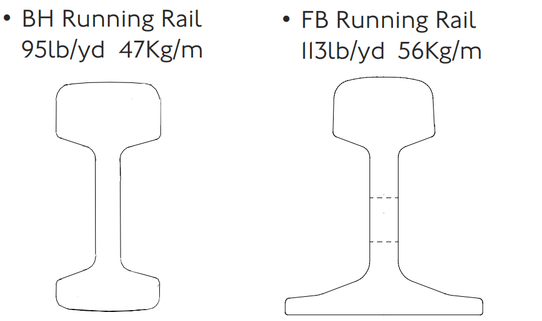
- General Track Guage:
- Straight Track: 1435 mm
- Check Rail Curves: 1438 mm
2.3: Running Rail Joints¶
- Purpose - to connect together lengths of rail to form a secure path
- Welded Types:
- Flash butt weld (workshop process)
- Thermic (site welding process)
- Fishplated (mechanical connection):
- Expansion (for short rails)
- Tight
- Junction
- Blockjoint
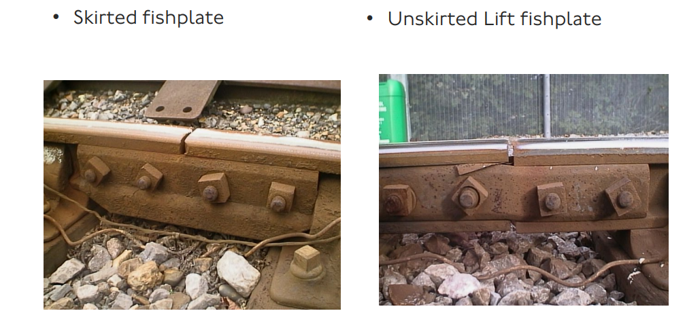
2.4: Sleepers¶
- Purpose - to maintain gauge
- Maintain dimension between rails
- Maintain coss level
- Support running and conductor rails
- Distribute dynamic and static loads
2.4.1: Sleepers Type¶
- Softwood - ballasted track only
- PRO: inexpensive, lightweight
- AGAINST: Easy to splitting and rotting
- Hardwood - ballasted and mainly concreted track
- PRO: duarbale, lighter than concrete
- AGAINST: exotic and expensive
- Composite
- FOR: Eco-friendly
- AGAINST: flammable, heat distortion
- Prestressed concrete - ballasted and concreted
- FOR: inexpensive, strong and stable
- AGAINST: very heavy, difficult to trim, brittle
2.5: Running Rail Supports and Fastenings¶
2.5.1: Bulkhead Track Keys¶
- Oak Keys:
- FOR - Eaasy to install, cheap, light and good electrical insulation
- AGAINST - Tend to shrink and fall out
- Steel:
- FOR - Wear resistance, easy to install, tight fitting, good creep resistance
- AGAINST - Need to be driven in tight, tendency to crush and fall out, tend to rust poor electricail insulation
- PANLOCK KEYS:
- FOR - secure location and low maintenance
- AGAINST - need special tool to install, tend to rust, poor electrical resistance
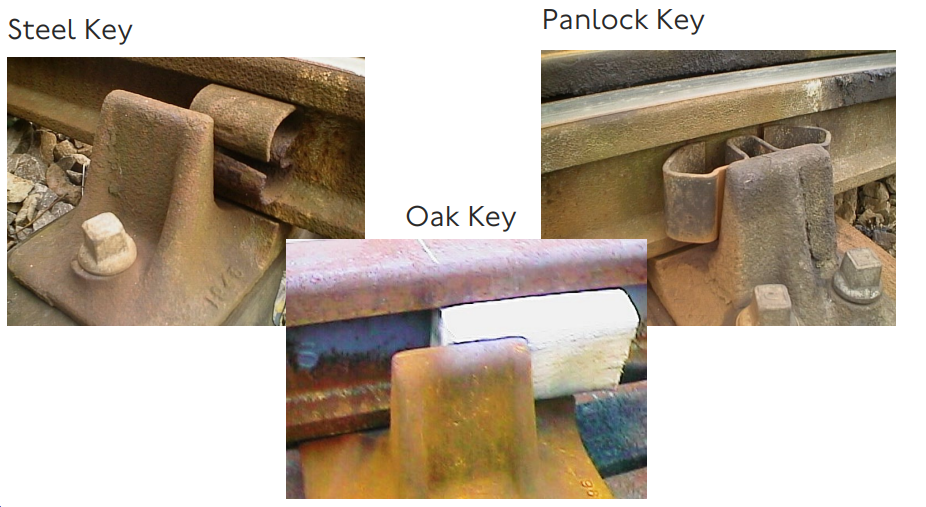
2.5.2: Chairscrews and ferrules¶

- Chairscrews: to hold the chair or baseplate securely to the sleepers. Restrains the rails and hold the gauge.
- Ferrules : accommodate casting tolerances in chair and baseplate. Prevent screw and metals to contact.
2.5.3: Flatbottom Track - rail clips¶
- Pandrol Clips
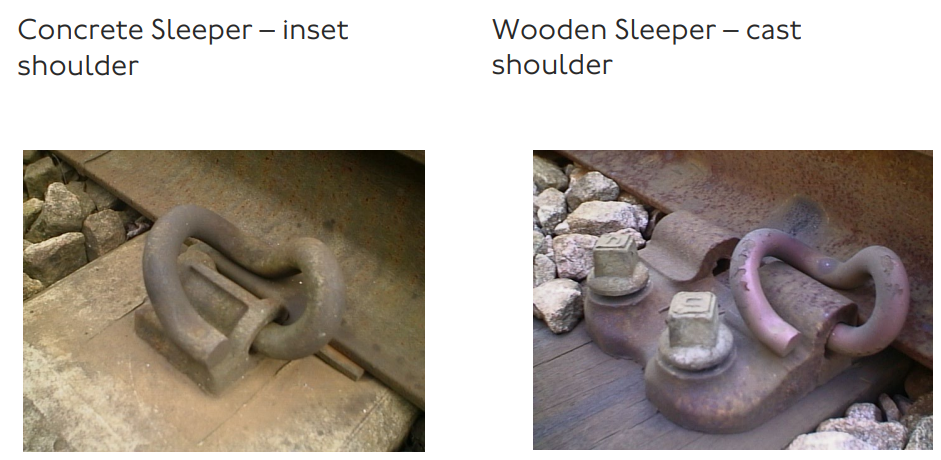
- Fastclips
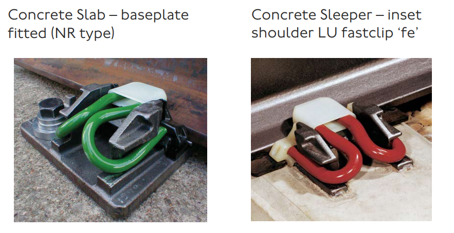
2.5.4: FB Rail vs BH Rail¶
- Flat Bottom rail:
- Baseplate with chairscrews and ferrules.
- Special baseplate for check rail.
- Pandrol shoulders casted into concrete sleepers.
- Pandrol with insulators and rail seat pad, directly seated on concrete sleepers.
- Bull Head Rail:
- Chairs with chariscrews, ferrules and keys
- Keys - oak or steel (two types: Mills and Panlock)
- Special Chairs for check rail
2.5.5: Resilient Baseplate - composite with rubber insert¶
- PRO:
- Reduced noise and vibration
- Longer lifetime
- DIS:
- Energy dissipation into noise
- Bulky component in space constained area
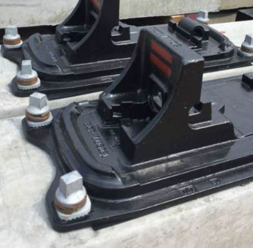
2.5.6: Track Bed¶
- Ballast:
- Purpose:
- To absorb and disperse track load through track foundations
- Restrain movement of sleepers
- Provide drainage
- Purpose:
- Ballast Sleepers:
- Granite Ballast - preferred
- FOR - hard stay sharps, strong abration resistant
- AGAINST - heavy and expensive
- Limestone - was most common in LU
- FOR - cheap, resonable drainage
- AGAINST - scarce resorce in the UK, cannot be used with concrete sleepers
- Ash Ballast
- Waste product from coal power station. Mainly in depot.
- Granite Ballast - preferred
- Typical Faults:
- Wet Spot: Train dynamic movement makes the underkying clay being drawn up into the ballast, thus blocks the drainage and loose the support.
2.6: General Track Construction¶
- 1: Geotexile laid on formation

- 2: Bottom Ballast installation

- 3: Concrete sleepers ready to lay

- 4: Sleeper laid Pandrol e-clip and fast clip
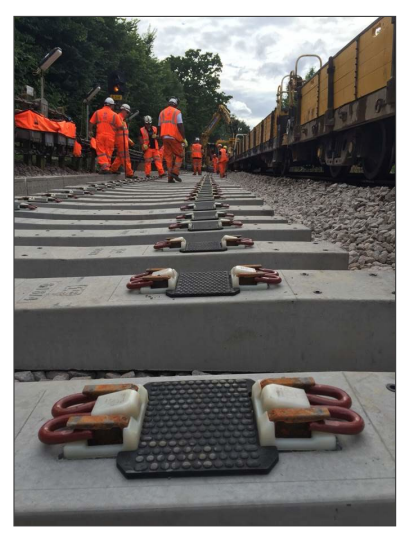
-
5: Rail Installation
-
6: Top Ballast Installation
-
7: Tamping
-
8: Welding and Stressing
2.7: Check Rails¶
- Purpose:
- Installed on curved track of of 200m radius or less ot prevent the ourside wheels to be derailed.
- 180 m radius on LU, DLR and trams can be lower than 60 m.
- Also used on some under bridges to constrain train.
- Cover check rails are provided at tripcock tester to correctly align the bogie.

2.8: Special Trackforms¶
- Long timbers:
- Used timbers or more modern composite materials.
- The timber is set into a trough within the bridge.

- Laterial Restraint
- Laterial resistance plates clamped to sleepers to resist sideway forces.
- Glued ballast spreads the loads and reduces the risk of localised failures.

- Slab Track
- Track slab is structural construction.
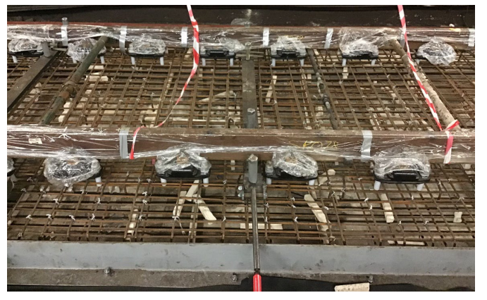
- Resilient Trackform
- Isolation of forces from supporting structure, need to consider unintended noises.
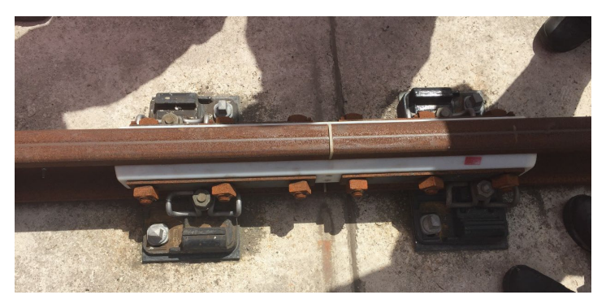
- Floating Slabtrack
- Used in noise-critical locations.
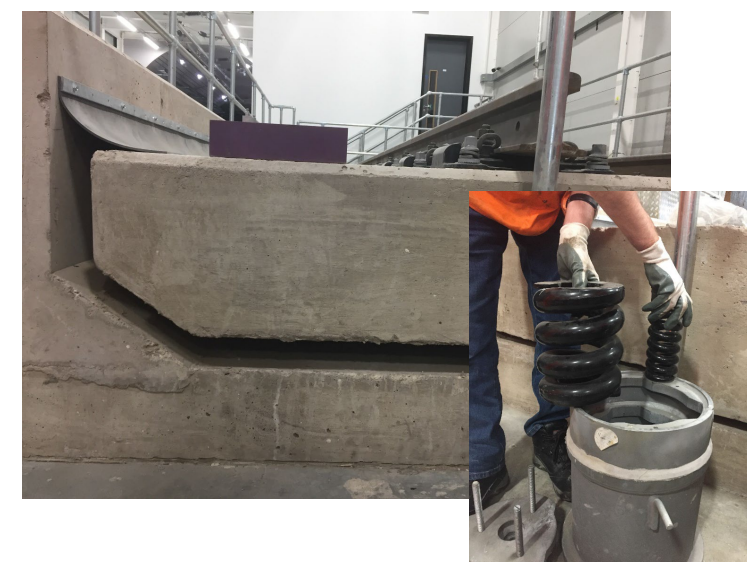
- Depot and Sidings - Train Arrestors
- Energy absorption and need space behind.
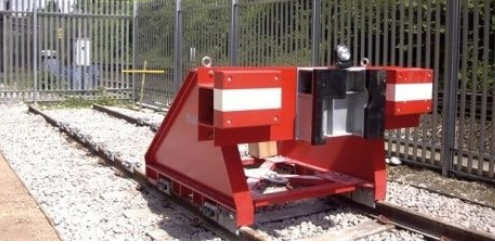
2.9: Conductor Rails¶
- Main Conductor Rail Sections
- Steel or Aluminium Body with Stainless Steel Cap

- Rail Lengths - Allowance for thermal expansion
- 400m with cable connection or 600m with one cable end & one Out of Gauge (OOG) rails in open / sub-surface sections.
- 800m with all types of connection in tube sections.
- Max lengths are dependent on curvature.
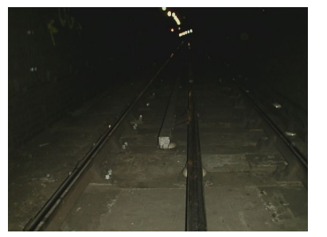
- Joints
- Purpose - to join together lengths of conductor rail
- Type of joints
- Welded flash butt in workshop
- Arc welding on site
- Fishplate - two holes

- General Components
- Insulator, clipsm Coachscrews and Shim
- Anchors
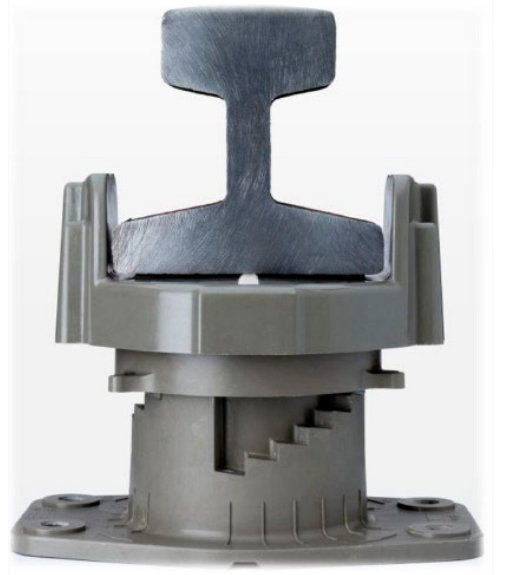
- Tube station
- Due to lack of sleepers, the negative conductor rail insulator is supported on a concrete pedstral.
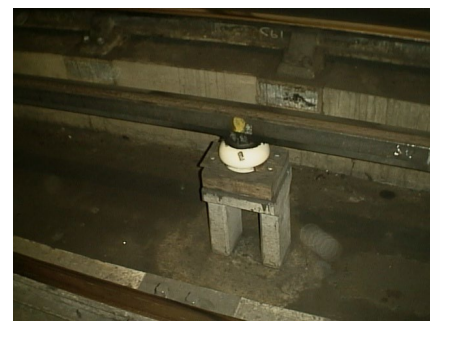
- Anchors:
- Purpose - to restrain the conductor rail from moving bodily longitudinally.
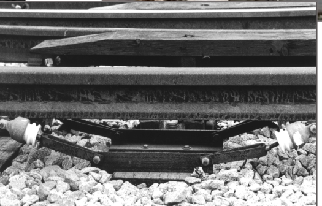
- Protection Planking
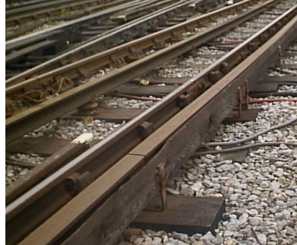
2.10: Junctionwork¶
-
Function of junctionwork:
- Corss from one running line or route to another
- Gain access to stabling or depot tracks
- Gain access to a particular platform at station
-
Facing and Trailing Crossover:
- When trains moving towards the switch rail rail head, it will be called Facing Crossover.
- When trains moving from a siding to a mainline (opposite to the switch rail head), it will be called Trailing Crossover. 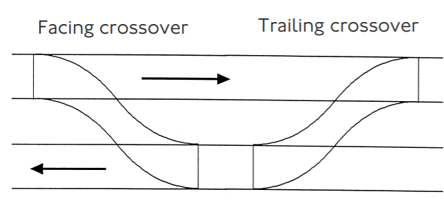
-
Scissors Crossover
- Two single lead turnout overlapped to fomr a Scissors Crossover.
- Allows trains moving between upstream and downstream.
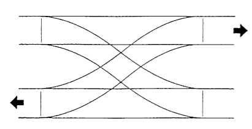
-
Trap Switches
- Avoid siding trains slipping into mainline by accident. 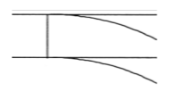
-
Diamond Crossing
- No switches in the trunout, the signalling interlocking is used as protection.
- Only two direction allowed.

- Double Slip
- Similar to Diamond Crossing, but additional swiches allow the movement from one direction to another.
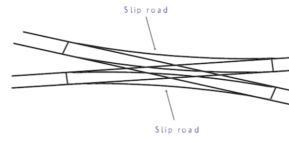
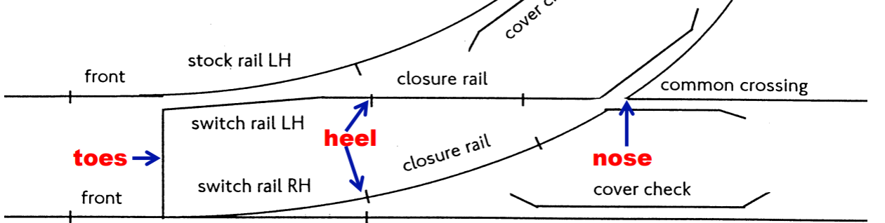
2.11：Points (switches)¶
- Stretcher Bars & Brackets
- Purpose:
- Transmits drive from one rail to another
- Ensure no electrical isolation between switch rails
- Purpose:
- Flangeway
- The space between the switch rail and stock rail (the open side) must be designed to perimit width of wheel flanges.
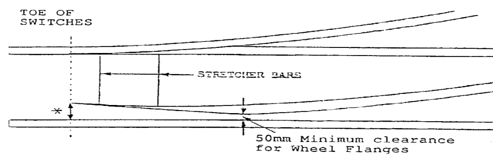
- Straightcut, Undercut and Rail Joggle
- Undercut / shallow depth / full depth profile provides extra space for flangeway (when switch rail is closed)
- Extra 'joggle' will be provided in stock rail to provide flangeway. Note that point will be facing crossover only.
 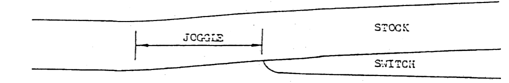
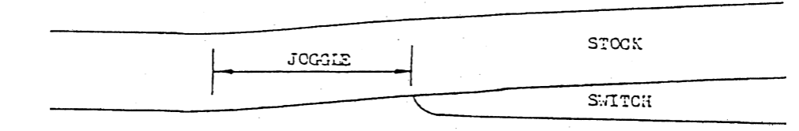
-
Supports and Fastenings
- Switchs could move laterally on slide chairs or baseplates.
- Switch and stock rail are fixed with an anchor at heel.
-
Distance Blocks
- The block retain the swith in the moveable part between the end of planning and fixed heel. 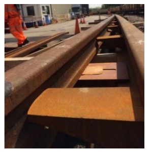
-
Soleplates
- To maintain track gauge at the toes of points.
- Fitted on top of the timber under the slide charis/baseplates, and are secured in position by the chariscrews hilding the slide chairs in position.
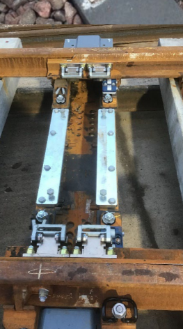
-
Switch Anchors (Bullhead)
- Purpose - to fix together the switch and stock rails providing:
- A fixed pivot point for switch rail
- Prevention of longitudinal movement.

- Purpose - to fix together the switch and stock rails providing:
-
Heel Blocks (Flat Bottom)
- Purpose - to fix together the switch and stock rails (same as Anchors in BH track)

- Twist Rails
- Twist the rails to change height of the rails, thus allow smooth transition between different track levels.
- Precurving of Rails
- Ensure corrct curvature of stock and switch rail before installation.
- Balancing of the energy required to normalise or revere points for the correct switch fit and providing a correct flange way.
2.13: Common Crossing & Obtuse Crossing¶
2.13.1: Unbroken Crossing - Common Crossing¶
- Using continious rail between the two rails without 'jumping'.
- Fully fabricated
- Used for unsignalled moves, where all traffic is on one route.
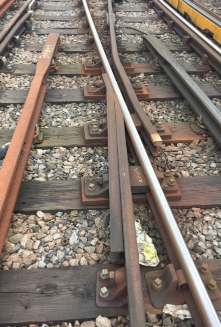
-
Types of Construction:
- Fully fabricated or Part fabricated
- Cast centre block
-
Cast Centre Block Crossings
- Used in congested areas for a smaller footprint.
- Used for bespoke geometry 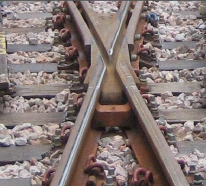
2.13.2: Obtuse Crossings¶
- Obtuse crossings are used in crossing layouts which include a diamond:
- Diamond Crossover
- Scissors Crossover
- Double Junction 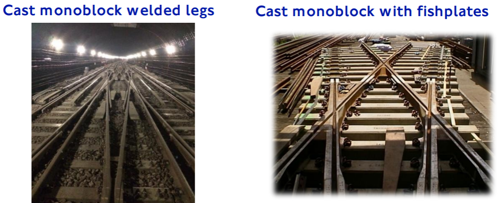
2.14: Cover Check Rails¶
- Purpose - to ensure that trains take the correct route when passing discontinuities in junctionwork.
- Opposite common corssing noses.
- Opposite the point rail nose-wing rail-point nose gaps of an obtuse crossings.
2.15: Concrete Bearers with Switch Panels¶
- All concrete bearers (sleepers) have to be custom cast to take account of the different crossing angles.
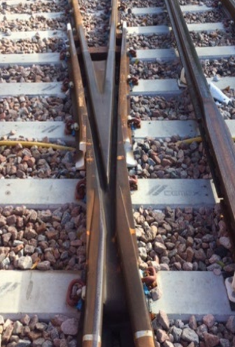
-
Switch pannels on concrete bearers include yhe slide base plate and heel charis fixed to the bearer with a rubber pad beneath the baseplate.
-
Beyond the heel the concrete bearers become deeper to maintain a constant construction depth where the rail is directly fixed with cast in Pandrol shoulders.
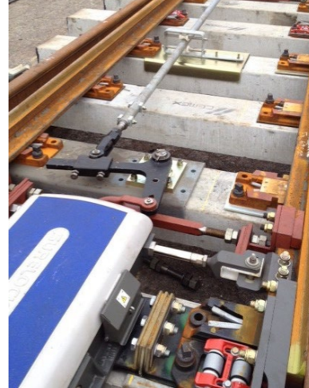
- Composite Bearers (recycled plastic) has been used to provide similar performance.
2.16: Concrete Track Form¶
- LVT Blocks
- Delkor Eggs - Resilient
2.17: Conductor Rails at Points¶
- Positive Splays / pick-up ramp:
- Guide collector shoes in the crossing areas.
- Negative Splays:
- To prevent collector shoes falling and jamming between the main and lean-to rail.
- Slipper Run Boards:
- Designed to carry low or hanging negative shoes over lead rails
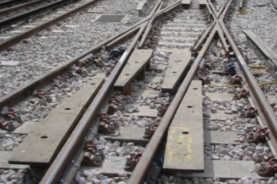
3: Track Welding¶
3.1: Rail Identification¶
- Rolled or stamped every 1km along the rail net.
- Manufacturer, Type of steel, Year of manugacturing, Approx weight and Rail profile.
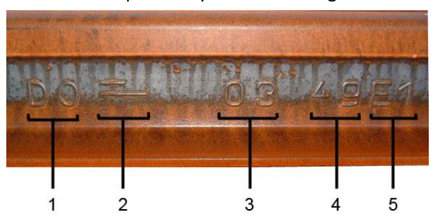
3.2: Fuel Gasses Used For Welding¶
- All cylinders used for welding contain gas under pressure and are sealed.
- All cylinders are colour coded to a recognised standard to indetify contents.
- Three main gases:
- Oxygen
- Acetylene
- Garlic odour
- Highly flammable and ignites very easily in air.
- Can be used in all areas.
- Propane
- Heavier than air, fish like odour
- Flammable and makes it a high fire and explosion hazard.
- Open section only.

3.3: Aluminothermic Welding¶
-
Used for Joining Rails and Defect Removal
-
Following second word war - very small amount of welding via old Thermit
- 1949/50 - SmW was introduced.
-
1976/77 - SkV process was introduced.
- Stronger welds
- Welding process with short preheat
- Reduction in process failures
- Main Thermit weld used in LU / NR
- Enhancements: SKV-E
-
Standard method for all Thermic process:
- 1: Rail gaps are produced either by flame cutting or mechanical saw. Checked squareness and verticality.
- 2: Align the rail.
-
3: Moulds are fitted and checked for position relative to the gap.

-
4: Add welding portions (4 main ingredients)
- Aluminium Powder
- Ion Oxide
- Mild Steel
- Ferro-manganese
- 5: Rail ends preheating started when the preheater is locked in the moulds. The sand core is dried in this process.
- 6: The crucible is placed into position on top of the moulds and portion ignited.
- Thermit reaction takes place
- Weld metal is released into the moulds.
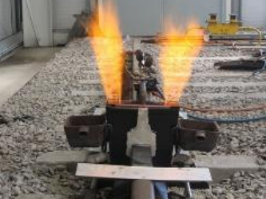
- 7: Remove all the support equipment at the set time following pouring.
- 8: At prescribed time:
- Weld debris is removed
- Fastenings are replaced
- Weld is ground within 25 mins to profile.
3.4: Manual Metal Arcing (MMA) Welding Processes¶
3.4.1: Fusion Welding Material¶
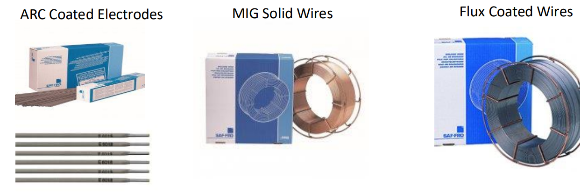
3.4.2: MMA Welding Processes¶
- The electrode is preferred method for the weld repair of rails.
- Step 1: When the arc is struck between metal rod (electrode) and the workpiece, both end surface melt to form a weld pool.
- Step 2: Simultaneous melting of the flux coating on the rod will form the sheilding gas to protect the weld pool.
- Step 3: The slag will then solidfy, cool and must be chipped off the weld bead when the welding is completed.
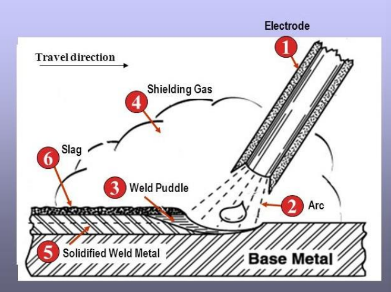
3.4.3: Flash Butt Welding¶
- To begin, the rails are positioned with a precise gap determined by factors such as materials.
- The rails are clamped, and a high current is applied.
- Once the correct temperature is reached, the current is stopped, and the rails are rapidly pressed together. The action forges the two rails into a single continuous rail.

3.4.4: Future in Welding¶
- HWR / HRW (Hot Weather Rail) Weld process for the removal of defects
- Induction Welding
- Phase Array Weld Inspection
- Mobile Flash Butt Welding
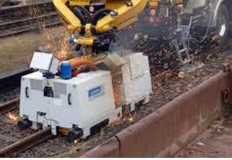
4: Track Recording and Analysis¶
4.1: Benifits of Track Geometry Measurement (Static and Dynamic)¶
- For passenger comfort and Asset life
- The dynamically measure benifits:
- True reflection of maximum deflection under load
- Record movement because of voids under sleepers
- Ability to record large section of track in short time
- Eliminate human errors
4.2: Measurement Principles¶
4.2.1: Geometry System Basics¶

4.2.2: Measurement Parametres¶
-
Track Geometry:
- Gauge (mm)
- Cant / Crosslevel (mm)
- Twist (2m and 10m) (mm)
- Top (Vertical Profile) (mm)
- Alignment (Lateral) (mm)
-
Dynamic cross-level (no longer required in S1159)
- Wheel unload
- Curvature
-
Corrugation (or Equivalent Rail Roughness)
-
Gauge:
- Distance between the two rails measured 14 mm below the crown of the rail.
- Norminal gauge is 1435 mm.
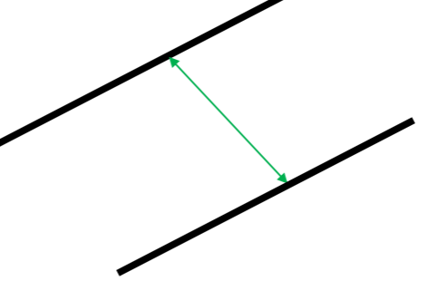
- Vertical Profile (TOP)
- The difference of rail height.
- With 25m filter fitted.
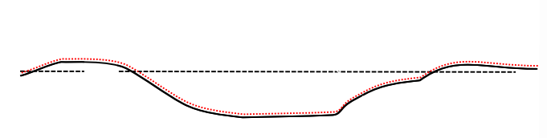
- Cant and Twist:
- Cant: Difference in height of two rails (the outer rail is normally higher than inner one in curves)
- Twist: Difference in Cant over a set distance, e.g. 2m between wheel centres and 10m between two bogie centres.
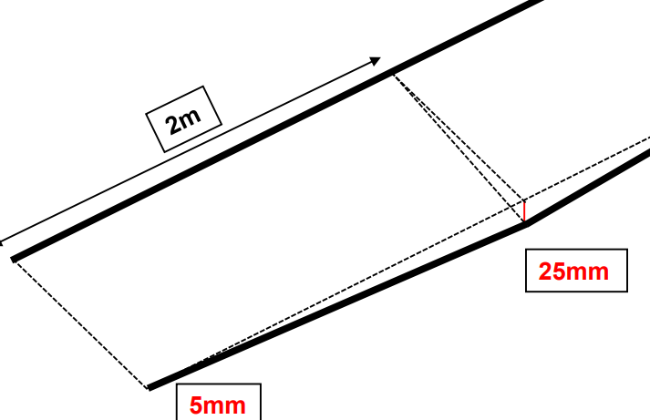
- Wheel Unload
- Wheel unload is a conbination of 2m and 10m twist on LU passenger stock.
- 100% wheel unload will lead to o downward force being applied from wheel to the rail.
- General wheel unload parameters are set so that rains experience less than 60% Wheel unload.
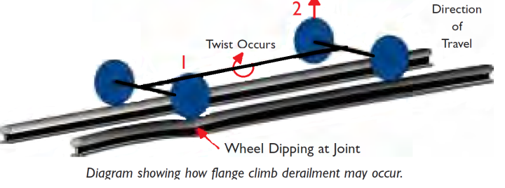
- Alignment
- Alignment measures the difference along the running rails.
- A perfect continuous curve gives zero reading.
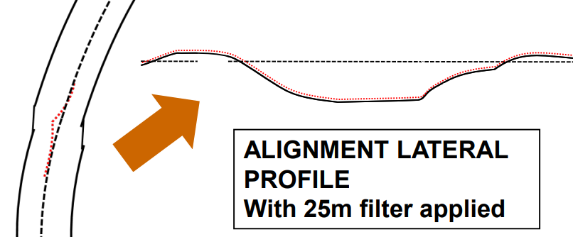
-
3 main causes of Geometry fault related derailment:
- Loss of gauge
- Twist fault resulting in wheel unload
- Cyclic Top
-
Noise and vehicle / track damage:
- Rail Roughness or Corrugation
4.3: TRV and ATMS Data Collection¶
4.3.1: TRV Digitisation¶
- Digitised TRV output into Excel
- All Data processed off train
4.3.2: ATMS¶
- Nince passenger trains fitted with Automated Track Monitoring Systems (ATMS)
- Gives geometry and supporting data when it is in service
-
ATMS could find faults not seen by legacy systems including TRV
-
Benefits:
- Proven unattended data collection
- Next day data processing
- Additional data - Noise and Vibration, and video
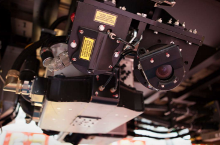
4.3.3: Comparison between ATMS and TRV¶
- TRV does well:
- Transducer on axles for vertical measurement. ATMS beam is offset from the axle, which can under report faults, e.g. twist.
- TRV covers low speed areas where ATMS laser shuts down for safety reasons.
- Dedcated vehicle gives pro=iority access to the train.
- ATMS deos well:
- ATMS does not smooth out Top faults like TRV.
- ATMS laser based system is better than TRV white light system.
- Higher recording frequency.
- Location accuracy from RFID tags compared with manual sync on TRV.
4.3.3: Data Outputs¶
- Discrete Exceedences:
- Safety Standard (SS)
- Need to be inspected within 24 hours
- Maintenance Limit (ML)
- Maintenance Target (MT)
- Can pose a risk of derailment and may require immediate action (e.g. speed restriction)
- Safety Standard (SS)

- ISSE Process
- Inspection fo Safety Standard Exceedence (ISSE)
- SS Fault must be inspected with 24 hours.
- Inspection now only has to be visual to check ok for traffic wholst repair is arranged
- Fault combination should follow S1159.
- Standard Deviation
- A quantitative representation of ride quality, allowing every 100m of track to be assigned a value for a parameter.
- Good indication of overall Track condition
- SD data can be used to plan maintenance activities like tamping and access degradation.
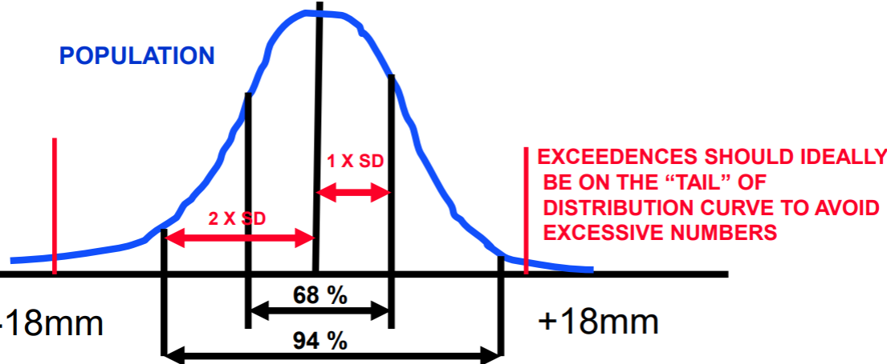
- DataMap Application
- Notification of new / rapidly degrading faults
- Trendin of faults with predicted timescale to fix
- Fault priority based in degradation rates not just the current value.
- Spurious Data
- Readings from Dynamic system do not match site static readings.
- Readings can be confirmed as spurious by a competent track recording engineer.
- Inherent Gepmetry
- Inherent geometry is valid reading, but the nature of track alignment / construction cause an inherent fault.
- Must be recorded on a centrally held register.
-
Recording Frequency
- TRV: 8 weeks Cat A and B track where ATMS does not run.
- ATMS: Minimum once every 28 days in areas covered by ATMS.
-
Recording Coverage:
- TRV and ATMS covered A, B and C track.
- Not decalred areas must be inspect by other means.
5: Managing Buckling¶
5.1: General Principles of Hot weather Management¶
- Stress Free Temperature (SFT)
- The temeprature at which the rail is of the same length as it would be in a natural unrestrained state, which is no thermal force inside the rail.
-
Critical rail temperature
- Is the temeprature to which the rail may be allowed to rise before measures to protect traffic are to be taken.
- The amoutn by which ythe CRT exceeds the SFT depends on the configuration and condition of the track.
-
Hot Weather for PWay
- Potential for Buckles or misalignments leading to speed resitrction.
- Mitigation / action:
- Ensure ballast profile
- Install rail at correct temperature
- Eliminate all defects.
- Short rails / jointed track - allow for expansion
- Maintenance work during hot weather
- Tamping and lining (open areas)
- Removal of wet beds / ballast disturbance
- Fastening /chair / baseplate removal
- Resleepering
- Rectification of geometry
- Rerailing (with no stress restoration)
- Ongoing Monitoring
- Ongoing specific temperature monitoring (CRT related)
- Overall temeprature monitoring
- Consider local condition
5.2: Rail configurationm rail stress and Rail tenmperatures¶
- Rail Configuration
- Short Rail Sites (SR)
- Long Welded Rail (LWR)
- Continuously Welded Rail (CWR)
- Rail Stressing
- 21-27 Deg C
- Hydraulic tensors
5.3: Buckles - if things don't go as planned¶
- Buckle definition:
- Any track deformation in hot weather which requires emergency remedial work, speed resitrction or emergency closure of the line and must be reported.
- Causes of Buckle:
- Incorrect SFT
- Poor ballast profile
- Poor sleeper condition
- Incorrectly managed short sections of Plain Line between Point & Cross (P&C).
- Unstable embankment.
- Sudden change in support
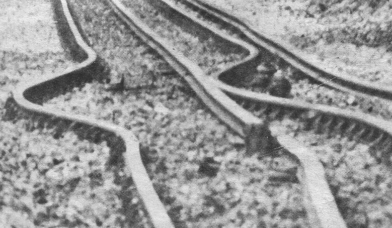
5.4: Interfaces with Other Asset areas¶
- Signals:
- Interface at P&C
- Block joints
- Civils:
- Embankment - loading with ballast and increasing the weight
- Slip / Settlement problem - risk of lateral movement is increased.
-
Rolling Stock
- Acceleration and Braking rates
- Wheel Condition
-
Adjustment Switch:
- Allows sliding movement (mm level) when temeprature changed
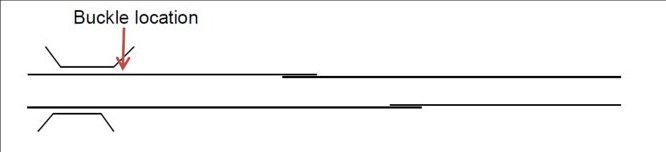
6: Power Distribution System¶
6.1: LU Power Assets¶
- LU needs electricity for luminaires, signals, compressed air, trains and ticket systems.
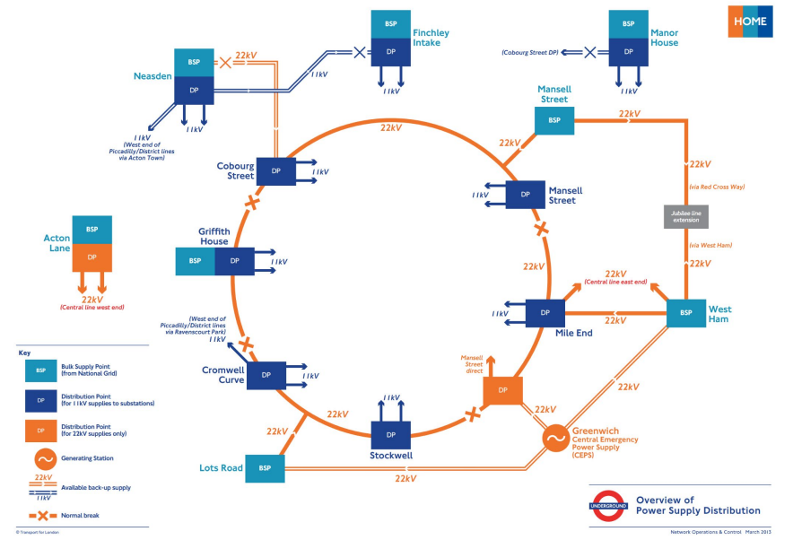
- 22kV (Bulk Supply Point) and 11kV (Distribution Point) network
- Auxiliary Transformers
- HV and LV CB
- Transformer Rectifier
- DC Traction CB
- Air compressors
- Frequency Changers
- Battery and Charger sets
- VAr Compensators
-
Harmonic Filters
-
Cable runs:
- 11kV Cable
- Air Main
- Pilot Cable
- Fibre Optic Cable
- Signal Cable
- LV Cable
- Connect Leaky Feeder
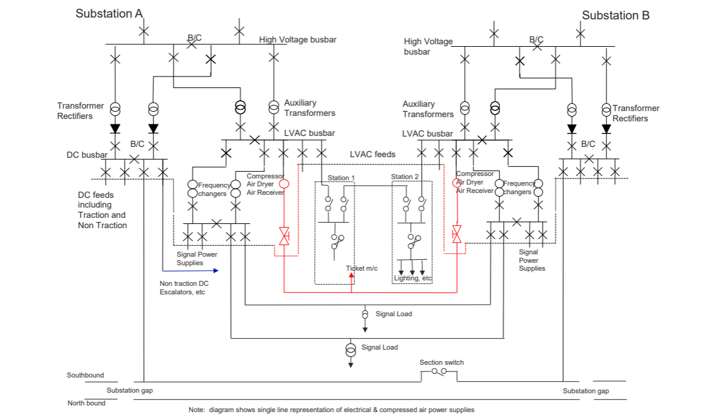
- 11kV from Substation will be stepped down and rectified by Transformer Rectifiers, and then connect to DC busbar, which provides DC feeds for traction / non-traction DC power.
- Seperate Aux Transformer feed LVAC busbar for Station and lighting.
- Additional Frequency Changers needed to provide required AC power for signalling equipments.
- Air Compressers are driven from LVAC busbar.
- Greenwich Power Station provides Central Emergency Power Supply (CEPS)
6.2: CEPS and LEPS¶
- Central Emergency Power Supplies (CEPS)
- Core part of LU stafety certificate.
- 7x14MW open cycle Gas Turbine Alternators.
- Automated control sequences can re-energise most of LU network within 30 mins for evacuation.
- Also used for system support and commercial generation.
- Local Emergency Power Supplies (LEPS)
- Off-line Battery Inverters (OLBIS) feed 25% of station lighting.
- Local UPS feeds essentail computer systems, comms and control systems for 1 h.
6.3: DC Sectionalisation & Earth Fault Management¶
6.3.1: Normal Operation - No Earth Fault¶
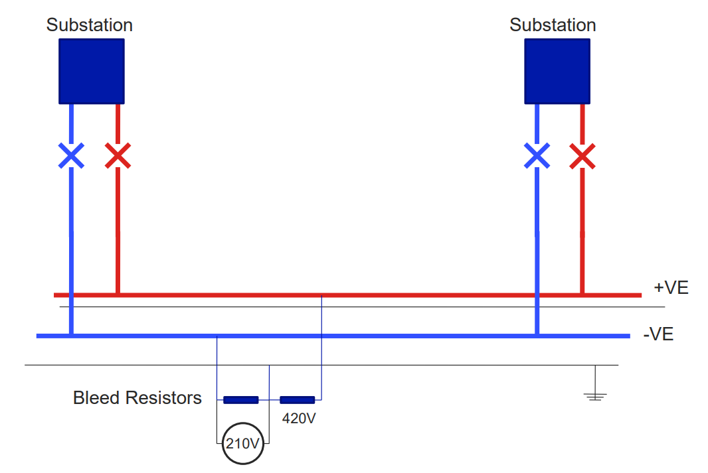
- Positive track - 420 V ref to GND
- Negative track - 220 V ref to GND
6.3.2: Negative rail Earth Fault¶

- Negative earth fault - Positive - negative 630 V
6.3.3: Positive rail Earth Fault¶
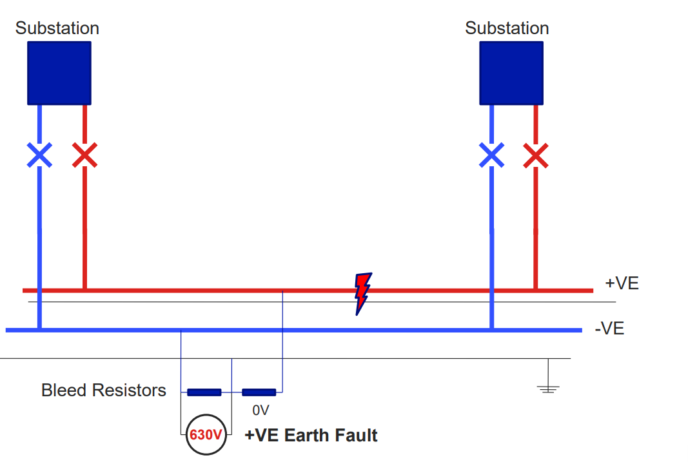
- Positive earth fault - Negative - GND 630 V
6.3.4: Both rails - Earth Fault¶
- Low impedance current route lead to overcurrent protection being triggered.
6.3.5: Managing Earth Faults¶
- Recuced area affected thrugh sectionalisation
- Separate section when there is a fault
- Remove ASAP
- Making larger DC sections
- Trade-off between efficiency and risk of earth faults.
- Operational instruction to open section switches to trace earth faults and reduce risks.
6.4: Power Quality¶
- Converting AC into DC (via rectifier) will produce harmonics.
- Rapidly accelerating / decelerating trains produces flicker in AC supply.
- Harmonics Filters and Static Var Compensators being used to manage quality.
6.5: Security of Supply and Winter readiness¶
- National Grid issues alerts if energy supplies are severely constrained and there is a higher risks of power outages.
- TfL have plans in place to react to local and widespread power outages.
7: LU Rolling Stock¶
7.1: Features of WRI¶
- Profile and Wear management: wheel, rail profiles and corrugations
- Friction management: grease contamination and leaf fall.
- Vehicle dynamics: steerability, suspansion tuning, wheel unloading
- Track geometry: wheel unloading, Vmax constraint, dynamic gauge
7.2: Wheel Profile¶
7.3: Vehicle on Curves¶
7.4: Wheel Wear¶
- The wear can be measured by Hand Gauges or MiniProf.
7.5: Rail Lubrication¶
- Rail side grease spreader
- Undergrame grease lubricators
7.6: Brakes - LU Principles¶
- The continous brake: Any accidental separation with a train must result in an EB applied.
- Deadman features: If it cannot be proved the driver is present and alert on a moving train, then EB would be applied.
- Sufficient Air Supply: The train must have sufficient air pressure before it can be motored forwards.
- The Tripcock: Trip the Trainstop and lead to EB applied.
-
ATP: Tripcock replaced with ATP in modern trains.
-
LU Brake system:
- Service Brake - pneumatic / electric
- Emergency Brake - peumatic only
- Parking Brake - mechanical
- Wheel Slide Protection (WSP)
- Deliever the optimum pratical braking force in poor adhesion conditions
- Respond to speed information from each wheelset
- When it deteced wheel lock-up, WSP operates a dump valve to release the brake on that wheelset and closes the valve when wheel picks up again.
7.7: RS Maintenance¶
- Maintenance activities described by WI
- Measured by MACS
- Controlled via Work Orders
- Changed authorised via CRS
8: Prevention of Derailments¶
8.1: Common Causes of derailments¶
- Collisions
- Obstructructions
- Overturn
- Broken rails / fishplates
- Running Rail Gauge Spread
- Wheel Flmage Climb
- Reversed Switch (Short Shunt)
- Points and Crossing (P&C) Derailments
- Suddeen change of direction - highest forces with assocaited wear
- Moveable parts - Multiple components / failure modes
- Multiple departments - Mainenance regimes
- Track Geometry
- Track Twist
8.2: Major derailments¶
8.2.1: Quintishill¶
- Primary Cause:
- Shift Change Irregularity
- Block Signalling Omissions
- Unauthorised persons in signalbox
- Forgetfulness
- Industry Change:
- Electricity Interlocking Signals

8.2.2: Hither Green¶
- Primary Cause:
- Broken Rail at a fishplate
- New joint but ballast insufficient when wooden sleeper replaced with concrete
- Train travelling at 70mph
- Industry Changes:
- Accelerated plans to remove jointed track to CWR.

8.2.3: Moorgate¶
- Primary Cause:
- Train driven into buffer stop at 40mph
- Driver error
- Industry Changes:
- Draw up signals at terminal stations
8.3: London Underground Derailment¶

8.4: How do we manage the derailment risk¶
8.5: Understanding the risks¶
- Investigations into previous incidents and developments in how we can assess risj has allowed us ti gain a better understanding of our derailment risks.
8.6: Removing the Risk¶
- Speed restrictions:
- Permanently or temporaily limiting the speed through an area or sectionof track to reduce the know risk or due to a newly identified fault or risk.
- Check rails:
- Additional rails installed alongside the low rail on a tight radius curve to prevent derialment.
- Check rails can be found in P&C often called cover checck rauks to ensure the wheels taske the correct path at crossing.
- Lubrication:
- Rail lubrication is used to decrease the friction between the running rails and th train wheels (devices installed on High rails)
8.7: Controlling the risks¶
- Inspection and preventive maintenance regimes
- We inspect our track assets and compoenents regularly through our various inspection regimes all designed to reduce the risk of derailments by early identification of faults adn subsequent intervention.
- PM1 - Basic visual inspection
- PM3 - Measured plain line inspection
- PM4 - Measured P&C Inspection
- TRV/ATMS - Train based dynamic measurements
- Ultrasonic Inspections
- Rail Surface Crack Management Inspections
- Specific derailment hazard inspections:
- S1176 - Inspection and repair to reduce the risk of derailment at switches was deceloped from thr SO53 inspection undertaken on NR.
8.8: Managing the risk¶
- How we manage controlled switches:
- Clear guidance via central documentation
- Clear signage on site
- Tighter inspection intervals
- Tighter maintenance thresholds
- Restrictive maintenance
8.9: Railway Accident Investigation Branch (RAIB)¶
- The RAIB independently investigates accidents to improve railway safety, and inform the industry and public.
8.10: Conclusions¶
- Derailment are an industry wide issue
- LU faces some unique challanges
- Track is the only fail unsafe asset
- Risk of derailment can never fully be removed
- Understanding the risks is the first step in removing, reducing and managing the risk.
- Derailment are normally a result of more than one failure within a system of risk
9: Signalling System¶
9.1: What is a Signalling System¶
- Signalling system is used on the railway to maintain a safe distance between trains and to control and regulate their movements.
- The number of signals in agiven area is dependent upon service requiements and varies from site to site.
- More signals allow for a quicker movement of trains through a given area but a balance mus be achieved between the reqired train frequency and cost.
9.2: Hand Signalling / Mechanical Signals¶
- Appoint a hand Signaler to control movement
- Mechanical signals operated by cables from long levers in the signal box, which were pulled to clear a signal (proceed) and returned to normal when the train had entered the Block. (Fully Manual)
9.3: Fully Automatic Signal¶
- Automatic signal checks the section ahead fro trains and if it is unoccupied, it will show a proceed aspect without the intervention of a Signalman.
9.4: Semi Automatic Signals¶
- Semi Automatic Signals allowed signals to be automatically returned to Danger (a 'Do not proceed') aspect with the passage of a train.
- As the Signalman still has to clear the signals in the first place they can be deemed to be Semi-automatic.
9.5: Train Detection with Rails¶
9.5.1: Track Circuits¶
- The track can be divided electrically into section by insulated Fishplates, known as Block joints (I.R.J).
- The electrical area between two IRJ is called a Track Circuit.
9.5.2: Signalling Block¶
- A, B and C each has a Track Ciruit / Relay. The relay would be 'down' when train occupied.
- The signal would be green only when both A and B Track Circuit are 'up'(no train).
9.5.3: Limit of Control (L.O.C)¶
- Block + Overlap ('Safety Margin')
9.6: Train Stop and Tripcock¶
- Train Stop is used to stop the train when signal is unsafe.
- The trainstop head would be raised up and thus hit the tripcock to stop the train.
- Tripcock is installed underframe of the train, which allows it could be triggered by train stop.
- When the tripcock is triggered, the train brake would be applied to stop the train.
9.7: Interlocking Lever Frame¶
- "N" Style Frame
- "V" Style Frame
- Operate one lever will interlock the operation to other conflicting routes.
- E.g. Point 18 needs to be set as Normal while setting Signal BC15. And Point 18 needs to be Reverse while setting Signal BC16.
- BC15 and BC16 are interlocked to avoid crash.
10: Railway Structures¶
10.1: Interface with PWay¶
- Bridge
- Platform Nosing Overhang
- Tunnel Strut

- TSR, Engineering Train Restriction
10.2: Example Structures¶
-
Rivetted Plate Underbridge
-
Covered Way
-
Plate Girder Covered Way
- Precast Prestressed Beams
- Station Girdering:
- The Brick Arch Tunnel
- Subway
- Truss (Through Type):

- Half-bridge Girder Bridge
- Longitudinal Timber

- Brick Arch Railway Bridge
10.3: Asset Management¶
- Assessed and Numbered
- Structurally Assessed (where original cal not available)
- Inspected:
- Principle Inspection (every 4 years)
- General Inspection (every year)
- Special Inspection
- Risk registered on STRATA
- Maintained:
- Routie Maintenance
- Corrective maintenance
- Civils Renewals
- Asset Condition rated (every year)
- Inspection / Work info on Maximo
10.4: Principles of Structural Engineering¶
10.4.1: How we Design / Assess structures¶
- Determine the loads
- Understand the Load Path
- Calculate internal forces (Capacity)
- Evaluate structural capacity
- Adjust for Condition
- Check Demands vs Capacity
- Check for Stability
10.5: Tunnels¶
10.5.1: Definition¶
- Tunnel: Artificial subterranean passage built to meet requirement of an underground railway, road or utility system.
- Shaft: A vertical or inclined Access to underground tunnels or chambers.
10.5.2: Types of Tunnels & Shafts¶
- Running tunnels, station tunnels, Cross over tunnels...
- Lifts shaft, Escalator shafts, Ventilation shafts...
10.5.3: Functional requirements¶
10.5.3.1: Required Duty¶
- Meet railway operating requirements
- Ensure support at asset interfaces without undue wear and tear.
- Match LUL policy in respect of realistic user perceptions.
- Minimize enviromental impact.
- Function within legal framework.
- Provide above within reliability and availability targets.
10.5.3.2: Fit for Purpose¶
- Tunnels must be of sufficient strength and stability to allow safe passage of trains:
- Superimposed surface and soil loading.
- Permanent way loading.
- Adjacent tunnelling or excavation.
- Tunnels to be maintained to ensure performance measures are achieved:
- Kinematic and structure gauge clearances.
- Remain watertight.
- Security of parts.
-
When these conditions are not met a speed restriction or temporary closure could ensure.
-
Provide effective tunnel ventilation
- Provide effective tunnel light for emergency
- Keep noise and vibration to a minimum.
- Fire resistance.
10.5.4: Constructure Methods¶
- Bored tunnels:
- Constructed using mechanical excavation techniques within a tunnelling shield
- Provision of early ground support system during excavation.
- Offers protection to the miners and aids the erection of the tunnel lining.
- Requiring the shield be capable of being pushed forward as the work progress thus enable a tunnel lining system to be constrcuted.
- Subaquaous tunnels:
- Shield driven or immersed tube beneath river beds.
- Cut and cover tunnels:
- Open trench construction and backfill.
- Sprayed Concrete lined tunnels (SCL)
- A tunnel construction method using open face excavation techniques with a lining construction within the tunnel using sprayed concrete to provide ground support
10.5.5: Mainnenance¶
-
Risks to Tunnel Network:
- Big safety risk if we lose a tunnel
- Big reputational risk
- Prone to occasional brittle failures
- Some progressive degradation (e.g. corrosion)
- Flood, river protection and flood mitigation capability
- Vulnerable to TfL and third party new works
-
Performance Measures:
- Failure:
- Excessive cracking and deformation, failure of structural integrity and over stressing resutling in line closure.
- Unacceptable:
- Cracking, deformation resulting in speed restriction.
- Essential:
- Minor defects of a non-structural nature.
- Desirable:
- Insignificant blemished requiring no further action.
- Ideal
- Failure:
-
Inspections & Condition Surveys (Concrete Tunnels):
- Spalling
- Crazing of concrete surfaces
- Chemical deterioration
-
LU London Clay Tunnels:
- 80% of tube tunnels
- Suited to mining
- Generally reliable assets
-
Tunnels below the London Clay
- Mainly in Lambeth Group
- Relative variable ground conditions
- Less predictable engineering behaviour
- Water ingress carrying sand potentially cause operational problems and structural concerns
- Solution:
- Tunnel joint sealing by injection of arylic grout.
- Cementitious back grouting outside the lining
- Temperary dewatering during adjacent works
- Monitoring for changes in tunnel shape
- Pyrite, Water and Air (Airtight is the only practical way)
- Expanded linings in mixed ground
- Deep - Thus heabily loaded
- Poor Geometry
- Solution (Short-term):
- Intensive structure monitoring
- Remedial support
- Solution (Long-term):
- Reconstruction of affected section using converntional cast iron linings.
- Work to be undertaken at night using a besopke machine mounted on a train.
- LU Civil Asset Management Philosophy
- Inspect condition
- Asset structral capacity
- Catalogue
- Identify all assets
- Record their characterirstics and condition
- Recognise asset behaviour
- Plan maintenance interventions based on assets risk
10.5.6: Infrastructure Protection - Keeping the Railway Safe with respect to tunnels¶
- Influence on existing tunnels
- Excavation and tunnelling - generate ground movement
- Demolition & basement construction
- Foundation Pilling
- Building Construction
- Increase of applied load
- Ground settlement
- External Effects on Tunnels
- Deformation
- Both unloading and reloading cause plastic deformations around tunnels
- Movements cause bending moments in the lining, event when final loads do not increase
- Serious effects on clearances to the kinematic and structure gauge
- Wireless remote condition monitoring
- Monitoring Dashboards